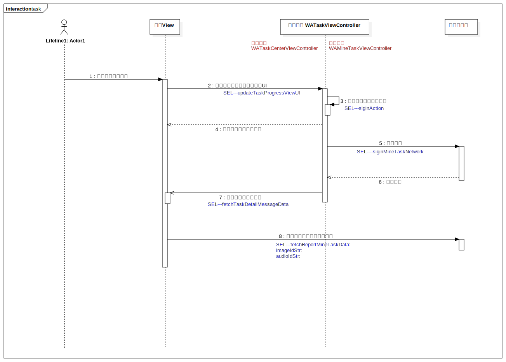

Interaction1
UMLInteraction
Untitled
::
sequence
::
task
::
Interaction1
Description
none
Diagrams

task
Participants
Lifeline1: Actor1
任务管理 WATaskViewController
服务端管理
界面View
Messages
开始定位用户位置 (Lifeline1→界面View)
判断任务的进行状态，显示UI (界面View→任务管理 WATaskViewController)
判断用户进入签到范围 (任务管理 WATaskViewController→任务管理 WATaskViewController)
返回进入签到范围信息 (任务管理 WATaskViewController→界面View)
进行签到 (任务管理 WATaskViewController→服务端管理)
签到成功 (服务端管理→任务管理 WATaskViewController)
签到成功，更新界面 (任务管理 WATaskViewController→界面View)
巡逻结束（提交巡逻警情） (界面View→服务端管理)
Properties
Name
Value
name
Interaction1
stereotype
null
visibility
public
isReentrant
true
Owned Elements
task